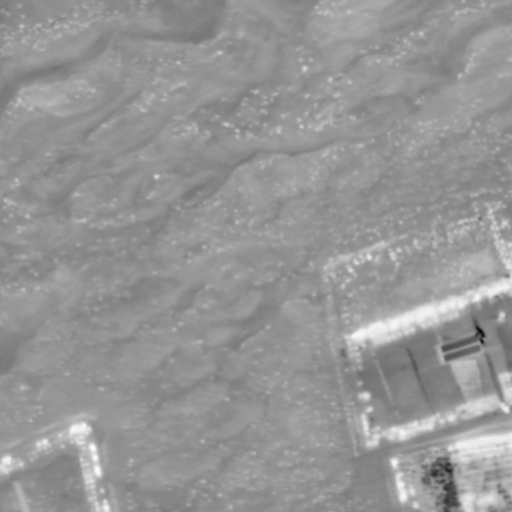
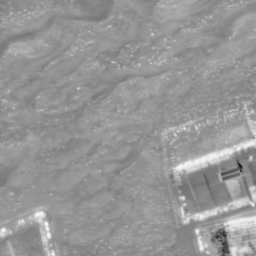

Abstract
Paired RGB-thermal data is crucial for visual-thermal sensor fusion and cross-modality tasks, including important applications such as multi-modal image alignment and retrieval. However, the scarcity of synchronized and calibrated RGB-thermal image pairs presents a major obstacle to progress in these areas. To overcome this challenge, RGB-to-Thermal (RGB-T) image translation has emerged as a promising solution, enabling the synthesis of thermal images from abundant RGB datasets for training purposes. In this study, we propose ThermalGen, an adaptive flow-based generative model for RGB-T image translation, incorporating an RGB image conditioning architecture and a style-disentangled mechanism. To support large-scale training, we curated eight public satellite-aerial, aerial, and ground RGB-T paired datasets, and introduced three new large-scale satellite-aerial RGB-T datasets—DJI-day, BosonPlus-day, and BosonPlus-night—captured across diverse times, sensor types, and geographic regions. Extensive evaluations across multiple RGB-T benchmarks demonstrate that ThermalGen achieves comparable or superior translation performance compared to existing GAN-based and diffusion-based methods. To our knowledge, ThermalGen is the first RGB-T image translation model capable of synthesizing thermal images that reflect significant variations in viewpoints, sensor characteristics, and environmental conditions.
ThermalGen exhibits robust performance under diverse conditions
We present RGB inputs alongside generated thermal images using ThermalGen across a range of challenging variations, including viewpoint variation, day-night change, sensor variation, and environmental change. Variations are illustrated between the two rows in each group.

Satellite-Thermal Paired Datasets
Apart from our previous Boson-night dataset, we release addtional datasets: DJI-day, Bosonplus-day, Bosonplus-night.
 



Thermal Map Generation Across CFG Scales
Our model generates thermal maps from satellite imagery. By leveraging the style-disentangled generative framework, the CFG scale can be tuned to modulate the style and appearance of the synthesized thermal maps.